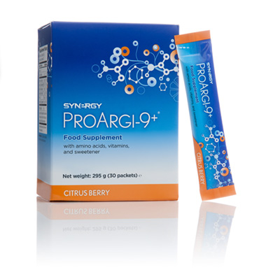
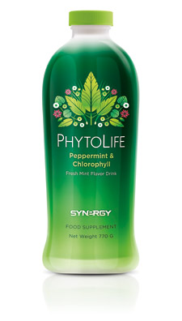
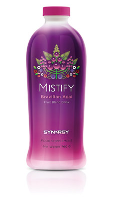

Produkter
-
ProArgi-9+
ProArgi-9+ innehåller aminosyrorna L-arginin och L-citrullin, tillsammans med C-, D- och B6-vitamin. Med sina många fördelar bevarar C- och B6-vitaminerna i ProArgi-9+ nerv- och immunsystemens normala funktion. De motverkar även trötthet. D-vitaminen i ProArgi-9+ håller blodkalkkoncentrationen på normal nivå och håller absorberingen av fosfor och muskelfunktionen på normal nivå.
Blanda rek. dagsdos, 1 skopa (10,5 g pulver) med minst 240 ml vatten. Rör om tills pulvret helt lösts upp. Kan tas när som helst under dagen.
Faktablad Källa -
PhytoLife
Synergys PhytoLife utvinns ur alfalfa. PhytoLife är en blandning av klorofyllin (natriumkopparklorofyllin) och pepparmyntsolja. Den koncentrerade pepparmyntsoljan i PhytoLife hjälper din matsmältning. Med frisk smak i vätskeform är PhytoLife ett utmärkt komplement till andra tillskott.
Dos: 5 ml (1 tesked) med 250 ml (2.5 dl) vatten 2 ggr dagligen. Skaka flaskan ordentligt före användning.
Källa -
Mistify
Mistify är ett tillskott i vätskeform, som innehåller B6-vitamin, acaibär och extrakt från grönt te. Detta tillskott är mycket gott och innehåller en blandning av frukt- och bärextrakt och -koncentrat, bland annat vindruvor, blåbär, hallon, tranbär och granatäpple. B6-vitaminen i Mistify har visat sig bidra till följande:
• Normal psykologisk funktion
• Normal bildning av röda blodkroppar
• Normal homocysteinmetabolism
Dosering: 30 ml 1-2 gånger om dagen.
-
Aloe Vera geldryck
Ökenliljan aloe vera är en kulturväxt som sedan årtusenden tillbaka är känd för sina hälsofrämjande effekter. Särskilt bra för människor är växtsorten aloe vera barbadensis miller, vars rena bladgel används i LR:s Aloe Vera geldryck. De olika variationerna av drycken innehåller 90-98% ren aloe vera bladgel.
• Aloe Vera Drinking Gel “Original Honey”: Klassikern med blomsterhonung
• Aloe Vera Drinking Gel “Aromatic Peach”: Med naturlig, fruktigt uppfriskande persikoarom
Källa -
Colloid Silver
Naturens egna antibiotikum, Colloid Silver är antibakteriellt och tar kål på åtminstone 650 olika virus, svampar, mikrober, parasiter och bakterier.
-
Emergency spray
-
Aloe vera gel
-
Propolis
-
Magnesiumolja (Magnesor)
Magnesor är ett magnesiumpreparat för utvärtes bruk. Magnesium tas upp väldigt fort genom huden och höjer vävnadens och cellens magnesiumnivåer snabbare än genom sådan som tas invärtes. Det inte går genom matsmältningskanalens eventuella upptagningsproblem, och orsakar därför inte heller lös mage. Formen av magnesium i Magnesorprodukter är magnesiumkloridhexahydrat. Fungerar utmärkt för smärta, värk, rastlösa ben och åderbråck.
Säljs som gel eller spray.
-
Kinesiologitejp
-
Mini Rayonex

Skyddar dig från negativa effekter av geobiologiska störningszoner. Enligt forskning aktiveras cellens metabolism samt sårläkningsprocessen (Dartsch, 2014. Dartsch Scientific GmbH, Institute of Cell Biological Test Systems).
www.rayonex.se